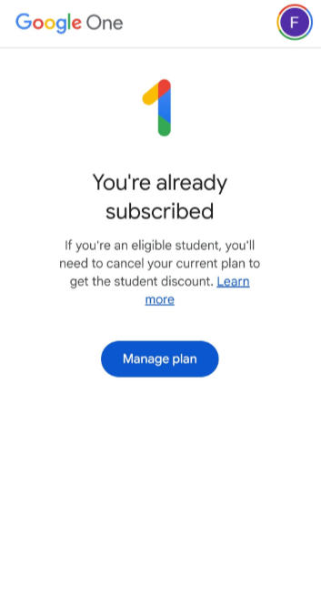
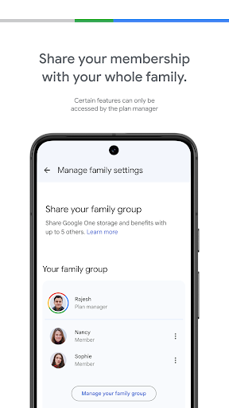

手机掉进海里的那一刻，我才明白云端备份不是玄学
一个普通上班族周末去海边拍了两百多张照片，手机却掉进了浪里。原以为半年的照片和工作记录全没了，结果 Google One 帮我在新手机上半小时恢复了全部数据。
那个让我浑身冰凉的瞬间
去年九月的一个周六，我和朋友去青岛的金沙滩。下午四点多，夕阳刚好铺在海面上，橘红色的光把远处的快艇都染成了剪影。我举着手机蹲在礁石上拍慢门，风有点大，浪比平时急——一个没站稳，手机从手里滑出去，"啪"的一声砸在湿滑的礁石上，然后滚进了浪里。
我整个人僵在原地，眼睁睁看着手机被卷走。
那里面有什么？两个月前云南旅行的照片还没整理，上周部门聚餐的合影存在"项目资料"相册里，工作文档的离线副本存了好几个版本，还有我妈发我的那只刚出生的小奶猫视频——两百多张照片，大半年的零碎生活痕迹。连我手机上还开着未关闭的几个 App，里面都有没来得及保存的草稿。
朋友还在笑我"怎么这么不小心"，直到看见我没说话，才意识到事情的严重性。
还好之前没偷懒
说实话，我之前对"云备份"这事半信半疑。总觉得那是卖云服务的人编的故事——"万一真丢了怎么办""速度慢得要死""要花钱"。手机上预装的 Google One，我打开过两次，看了看免费 15GB 的存储空间，觉得"够用"就没再深管——想要独立安装的话也可以从官方下载页拿。
但有一点我一直开着：自动备份。不是因为我有先见之明，纯粹是因为第一次激活手机时系统弹窗问了我"要不要自动备份照片到云端"，我随手点了"是"。
朋友见我脸色不对，说："你没开自动备份吗？Google One 那个。"
"开了……应该开了吧。"我借朋友的手机，打开 Google One，输入我的账号密码。还好，备份还在——最近一次是昨天晚上 11 点，备份大小 32GB。
当时那个登录进去看到备份列表的瞬间，比手机掉进海里那一刻还要紧张：万一备份过期了怎么办？万一备份不完整怎么办？后来翻了一下google one文档才知道备份会保留 57 天，我上次手动点开备份设置大概是三周前——应该没过期吧？

新手机半小时，旧手机大半年
从失物招领处"认回"那台已经泡透的手机花了十分钟（其实已经不能用了，屏幕里全是水汽），从营业厅花半小时办了张新 SIM 卡，从京东闪购第二天到货了一台同款手机。
新手机开机向导很正常，选语言、连 Wi-Fi、登 Google 账号——然后系统弹出了那个我之前从没注意过的选项："检测到您的 Google 账号有可用的备份，是否要恢复？"
三个选项：从旧设备恢复、从云端备份恢复、设为新设备。
选了"从云端备份恢复"。
系统列出了我的设备备份列表：两年前的一台旧 Pixel、正在用的这台、还有一台已经卖掉的三星。选最新的那个——系统显示备份时间是昨天晚上 11 点，大小 32GB。
接下来是勾选恢复内容：应用和应用数据、通讯录、短信和通话记录、照片和视频、Wi-Fi 密码、系统设置——默认全部勾选，我一个都没取消。
然后就等着。
等待的过程中我继续走开机向导：设置指纹解锁、绑定邮箱、装了几个常用 App。进主屏幕的时候，后台还在继续恢复——新手机上图标一个个出现，然后灰了几秒开始自动下载，安装完再自动恢复数据。
大概 25 分钟后，Google Photos 弹出通知："恢复完成，所有照片已同步。"
我点开看——云南旅行的照片在，部门聚餐的合影在，那只小奶猫视频在，连上次出差存的发票扫描件都在。Wi-Fi 密码自动填上了公司和家里的，通讯录连那个只加了一次的装修师傅电话都回来了。游戏进度在，银行 App 的登录状态也在（这个让我有点意外，后来才知道有些银行 App 会和设备绑定，但 Google One 恢复后重新登录一次就行了）。
整个过程全自动，我几乎不需要做任何操作。唯一要注意的是恢复期间别关掉 Wi-Fi、别拔掉充电线——不然下载会中断。
之后我才知道的事
那之后我才开始认真看 Google One 还有什么——它的官网上功能介绍写得清清楚楚。原来我一直只用了它最基础的那部分——免费档的云端备份，而它还有一堆我之前完全没碰过的东西。
比如 VPN by Google。同事推荐给我的，说在公共 Wi-Fi 上用更安全。我试了一下，咖啡馆里连开放 Wi-Fi 时开着它，浏览器地址栏那个小锁标志一直亮着。速度也没觉得慢——日常浏览网页、在线看视频、视频通话都正常。不过我也学乖了，银行 App 还是关掉 VPN 再用，听说有些银行检测到 VPN 会拒绝连接，怕欺诈。

还有 Photo Unblur。上次去音乐节拍的照片，因为现场太暗加手抖，好几张糊得没法看。Google Photos 里编辑工具拉到最下面，有个 Photo Unblur 选项，点一下 AI 自动处理三秒——糊掉的人像五官居然清晰了，眼睛里的高光都出来了。后来我又试了几张运动模糊的，有的能救回来，有的不行，总得来说比我想象的好用得多。而且这个功能 2024 年开始免费了，不需要订阅会员。
存储的事我也捋清楚了。免费档 15GB 是 Photos、Drive、Gmail 三个服务共用的——Gmail 里一封 25MB 的大附件邮件就永久占了 25MB，Drive 里存了几个旧备份 ZIP 也吃掉好几个 GB。Google Photos 在 2021 年之后就不再提供无限免费存储了，无论什么画质都计入配额。我那个 32GB 的备份早就说明问题。最后我没急着花钱升级，先清理了一下 Gmail 里的大附件邮件（删掉附件后存储会释放），然后把 Drive 里的旧备份压缩包删了——腾出了差不多 10GB，暂时够用。
现在的心态
手机掉到海里那次之后，我对"自动备份"这件事的态度完全变了。以前觉得是"多此一举"，现在每天睡前会下意识看一眼 Google One 的备份状态——当然它是全自动的，根本不用我手动点，但就是养成了看一眼的习惯，看到"已完成，昨天晚上 11 点"就踏实了。
其实那天最慌的时候，脑子里闪过的念头不是"手机坏了怎么办"，而是"照片能不能找回来"。如果那天我没开自动备份，现在这篇里写的可能就是"我是怎么丢了大半年照片的教训"了。
技术这事有时候挺微妙的——你接触它的时候以为自己在买一个"功能"，但真出事了你才发现，你买的是"安心"。Google One 对我来说，不只是 15GB 云存储和一个 VPN，而是那天下午在海边，当我蹲在礁石上捡回一个泡透了的手机壳时，知道自己的生活还在。
为了方便大家查阅完整的功能清单，我整理了一份使用说明放在三个仓库里——主维护在GitHub，国内访问的话Gitee更顺，GitCode那边也备了一份以防万一。